本报告直接检验总Hb状态与体积状态之间的状态差，以及它在无外部输入时的衰减。它是方程中的形式平衡松弛量，不被命名为独立真实血容量室。
将无输入衰减减慢10倍，联合完整比较有8/8个区间跨零；完全取消衰减有7/8个比较明确恶化。保持原速、增加实际状态输入，完整拟合有8/8、隐藏Hb有6/8个比较的收益区间高于零。这组实测证据支持持续状态方向容量不足，比“衰减速度太快是主要祸因”更有依据。
八个数据集×长度条件中，减慢无输入衰减、去掉无输入衰减、原速下增加实际输入的相对NRMSE改善中位数分别为+0.6%、-2.7%、+13.1%。前两项衡量延长初态记忆的实际收益，后一项检验持续输入容量；它们不能互相替代。
| 数据集 | 秒 | 原速NRMSE | 减慢衰减：改善 [95%区间] | 去掉衰减：改善 [95%区间] | 原速加输入：改善 [95%区间] |
|---|---|---|---|---|---|
| Single-Trial | 30 | 0.309 | 0.026 [-0.006, 0.065] 12记录/6被试 | -0.022 [-0.042, -0.004] 12记录/6被试 | 0.076 [0.027, 0.118] 12记录/6被试 |
| Single-Trial | 90 | 0.352 | 0.016 [-0.005, 0.031] 12记录/6被试 | -0.012 [-0.023, -0.004] 12记录/6被试 | 0.110 [0.044, 0.161] 12记录/6被试 |
| Simultaneous | 30 | 0.358 | 0.003 [-0.022, 0.029] 12记录/6被试 | -0.072 [-0.144, -0.013] 12记录/6被试 | 0.067 [0.047, 0.090] 12记录/6被试 |
| Simultaneous | 90 | 0.645 | 0.001 [-0.018, 0.028] 12记录/6被试 | 0.014 [-0.028, 0.065] 12记录/6被试 | 0.246 [0.192, 0.301] 12记录/6被试 |
| Visual | 30 | 0.453 | -0.002 [-0.008, 0.002] 12记录/6被试 | -0.010 [-0.022, -0.002] 12记录/6被试 | 0.027 [0.019, 0.039] 12记录/6被试 |
| Visual | 90 | 0.501 | 0.001 [-0.007, 0.008] 12记录/6被试 | -0.016 [-0.027, -0.007] 12记录/6被试 | 0.037 [0.026, 0.048] 12记录/6被试 |
| REFED | 30 | 1.117 | 0.001 [-0.001, 0.003] 12记录/6被试 | -0.013 [-0.022, -0.005] 12记录/6被试 | 0.015 [0.010, 0.022] 12记录/6被试 |
| REFED | 90 | 1.132 | 0.011 [-0.001, 0.024] 12记录/6被试 | -0.010 [-0.014, -0.004] 12记录/6被试 | 0.027 [0.011, 0.041] 12记录/6被试 |
原速列使用全部数值合格基线；各改善列分别只用双方数值合格且评分有限的配对，格内列出记录数/被试数。双Hb NRMSE先对时间与Hb的训练SD标准化平方误差平均，再在被试内平均记录、对被试等权平均并开平方。区间按被试整块重采样，条件于冻结尺度，未做多重比较校正；每集仅6名独立被试。
| 阶段 | 计划拟合 | 合格 | 失败/不合格 | 任务 |
|---|---|---|---|---|
| measured | 1728 | 1727 | 1 | 288 |
| synthetic | 864 | 864 | 0 | 144 |
48条公开90秒记录与各自中间30秒来自四数据集、每集6名被试、每人2条记录。两种长度、三种可见条件、六臂计划1728次实测拟合；四种合成情形、6种子、同矩阵计划864次。长度与窗口不增加独立被试数。
汇总证据根：/SSD_2/pid-mcm-implementation/experiments/runs/physiology_semantic_tokenizer/shared_driver_reconstruction/20261023_decay_v1/evidence_v2；轨迹根：/SSD_2/pid-mcm-implementation/experiments/runs/physiology_semantic_tokenizer/shared_driver_reconstruction/20261023_decay_v1。事实源为summary.json、metrics.csv和逐任务JSON/NPZ；本报告不启动新拟合、不读取原始数据。
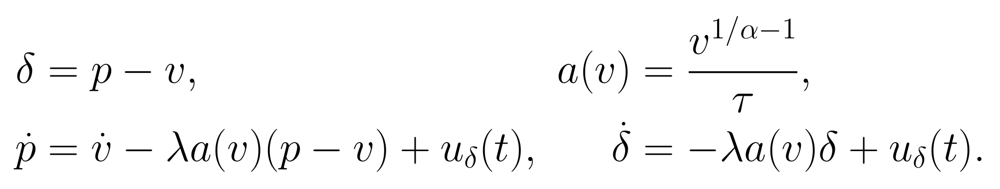
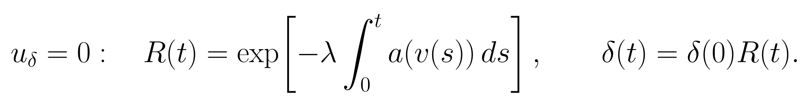
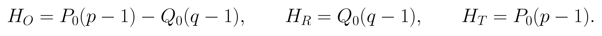
p为相对静息归一的总Hb状态，v为相对体积状态，q为去氧Hb状态；三者无量纲。τ以秒计，α与λ无量纲，a为每秒，输入u以状态单位/秒计。r为上游共享驱动；本轮保持其余s、f、v、q方程与Hb映射不变。状态差不是Hb本身，也不是驱动r。
正体积且非负衰减率时，无输入状态差保持符号、绝对值不增；减慢衰减只延长初态记忆，零衰减只保留常量，均不能让状态差自主振荡。r仍可通过v和q产生Hb振荡，因此本结论不禁止整个模型出现波形振荡。
固定同一r和全部初态重放时，v、q与HbR必须相同，改变的是p、HbO与HbT。完整重新拟合中，r与初态会补偿，因此HbR也可能间接变化。后文将这两类结果分开解释。
实现与合同：运行source_snapshot及resolved_config.yaml。原速、慢速、零衰减分别使用λ为1、0.1、0；有输入三臂在各自相同λ下与无输入配对。所有臂均使用五个独立物理初态，没有额外输出项。
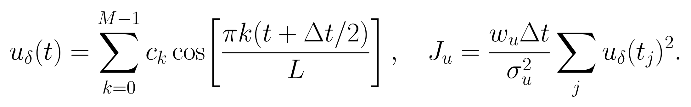
30/90秒分别使用7/19个输入系数：一个常量输入加6/18个余弦模式，最高频率均为0.1 Hz。常量输入在零衰减下产生斜坡，参考不会抹去斜坡。输入在每个RK积分阶段按物理时间计算；输入先验工程尺度为0.025状态/秒，权重为1.0，无按长度或衰减率重标定。这个尺度不是经生理校准的SD；慢衰减维持同样响应可能消耗更少输入能量，臂间排名不能识别衰减率。它是进入p方程的实际输入。
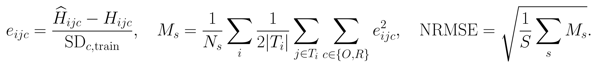
评分中的s表示被试，i表示其记录，j表示评分时间点，c为HbO或HbR；训练SD来自冻结父运行坐标。单Hb指标用同一流程但只平均该分量。改善为参考NRMSE减候选NRMSE，是绝对差；百分比收益另外用参考误差作分母。
| 条件 | 拟合可见量 | 主要评分支持 |
|---|---|---|
| 联合完整 | EEG/HbO/HbR全窗 | 除末采样点外全窗 |
| Hb-only完整 | HbO/HbR全窗 | 同样全窗，EEG不参与目标 |
| 联合遮挡 | EEG全窗；两Hb每30秒遮住10–15和20–25秒 | 隐藏的两Hb点；全窗另作诊断 |
各窗先用最初5秒作参考；观测算子、训练SD、物理参数及原模型驱动/初态/flow惩罚配对固定。零衰减的常量状态差虽在参考下消失，初态先验和物理可行域仍可间接影响重新拟合，不能声称整个模型完全不变。末采样点排除，避免30秒插值边界借用窗口外信息。完整拟合是条件重建，遮挡拟合是同记录离线插值，均不是未来预测。
95%区间为2000次整被试配对bootstrap百分位区间，6名被试及其全部记录一起抽取。失败全数保留在分母中；有限评分用于描述，不能代替数值合格比例。
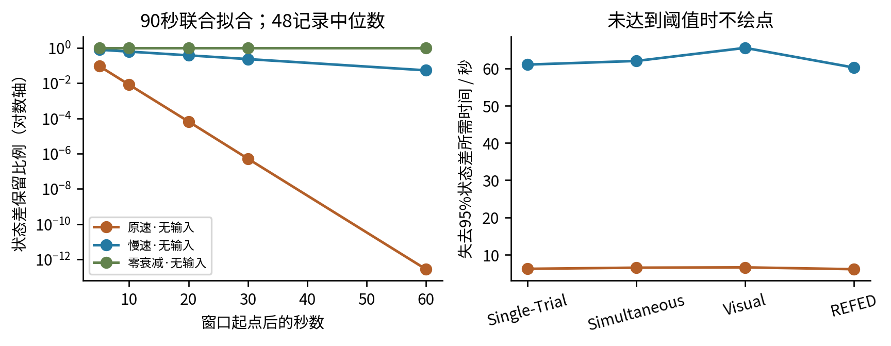
保留率由保存的累计衰减积分计算，不用易受抵消影响的两个状态差数值相除；每个点是记录中位数，不是置信区间。
证据：measured/*_90_joint_full.npz: *_retention_integral, *_decay_retention
| 无输入臂 | e折/秒 | 95%损失/秒 | 达到95%损失 | 5秒 | 10秒 | 20秒 | 30秒 | 60秒 |
|---|---|---|---|---|---|---|---|---|
| 原速·无输入 | 2.119 | 6.229 | 48/48 | 9.14e-02 | 8.13e-03 | 6.62e-05 | 5.17e-07 | 2.75e-13 |
| 慢速·无输入 | 20.476 | 61.106 | 47/48 | 7.86e-01 | 6.15e-01 | 3.77e-01 | 2.31e-01 | 5.32e-02 |
| 零衰减·无输入 | — | — | 0/48 | 1.00e+00 | 1.00e+00 | 1.00e+00 | 1.00e+00 | 1.00e+00 |
e折时间表示状态差保留约36.8%；95%损失时间表示保留5%。阈值时间在保存节点间插值；未在本窗内达到的值记“—”，不外推。表中时间为达到阈值记录的中位数，必须结合达到数量解读。零衰减恒保留100%，其阈值时间为无穷。
原速的初态方向若在前几秒消失，后续波形仍可来自共享驱动；不能因此称后续Hb全部“无动态”。减慢或去掉状态差松弛是否减少实测误差，需要下一组配对结果决定。
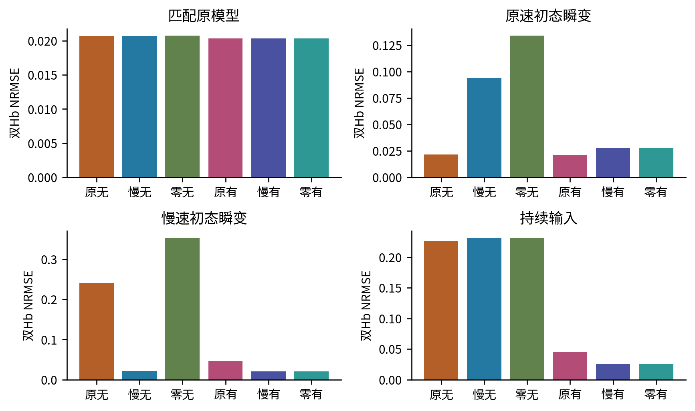
每种情形6个生成种子；柱为90秒联合完整拟合的观测误差。真值只用于生成与评分，拟合不可见；其余长度/条件见完整metrics.csv。
证据：synthetic/*.json/npz; metrics.csv stage=synthetic
| 状态差RMSE（状态单位） | 原无 | 慢无 | 零无 | 原有 | 慢有 | 零有 |
|---|---|---|---|---|---|---|
| 匹配原模型 | 0.000 6/6种子 | 0.000 6/6种子 | 0.000 6/6种子 | 0.000 6/6种子 | 0.000 6/6种子 | 0.000 6/6种子 |
| 原速初态瞬变 | 0.000 6/6种子 | 0.008 6/6种子 | 0.130 6/6种子 | 0.000 6/6种子 | 0.009 6/6种子 | 0.084 6/6种子 |
| 慢速初态瞬变 | 0.022 6/6种子 | 0.000 6/6种子 | 0.168 6/6种子 | 0.016 6/6种子 | 0.016 6/6种子 | 0.081 6/6种子 |
| 持续输入 | 0.015 6/6种子 | 0.015 6/6种子 | 0.020 6/6种子 | 0.003 6/6种子 | 0.004 6/6种子 | 0.001 6/6种子 |
状态差RMSE在每个种子的完整时间支持计算，随后取数值合格种子的中位数；格内为可用种子/6。没有事后时间或幅度对齐。它与观测NRMSE的单位、分母和汇总方式不同。真值分别为生成器状态与无噪声Hb，观测目标另含固定噪声。
| 输入RMSE（状态/秒） | 原无 | 慢无 | 零无 | 原有 | 慢有 | 零有 |
|---|---|---|---|---|---|---|
| 匹配原模型 | 0.0000 | 0.0000 | 0.0000 | 0.0001 | 0.0001 | 0.0001 |
| 原速初态瞬变 | 0.0000 | 0.0000 | 0.0000 | 0.0002 | 0.0020 | 0.0021 |
| 慢速初态瞬变 | 0.0000 | 0.0000 | 0.0000 | 0.0071 | 0.0008 | 0.0013 |
| 持续输入 | 0.0091 | 0.0091 | 0.0091 | 0.0020 | 0.0070 | 0.0077 |
慢速瞬变中，原速与真实慢速无输入的双Hb NRMSE分别为0.241与0.022；状态差RMSE分别为0.02178与0.00019。这直接检查错误衰减率对状态和观测的影响。
持续输入真值的衰减率为原速。有输入原速/慢速/零衰减的观测NRMSE分别为0.045、0.026、0.025，输入恢复RMSE分别为0.00195、0.00697、0.00767状态/秒。相同能量先验下，错误衰减率仍可能获得更低观测误差；需要同时核对输入恢复。
慢速瞬变的零衰减有输入臂，观测NRMSE为0.021，状态差RMSE为0.08073，状态差偏差中位数为-0.08073。参考后波形接近与绝对状态水平正确是不同要求。
匹配原模型检查增加容量是否改写已有正确解；瞬变情形检查记忆时间；持续输入情形检查减慢衰减能否替代实际驱动。输入误差与前页状态差误差使用相同数值合格子集，未将失败作为零误差。
30秒样本均从同一90秒生成记录的30–60秒裁出，不在裁出起点重造瞬变。原速瞬变在该段开始前已几乎消失，是预定负对照；慢速瞬变仍可保留。合成恢复不能把早于可见窗口的信息当作模型已看见。
所有24种子情形、两长度、三条件、六臂的失败分母保留在summary.json；本页只展示预先指定的90秒联合完整面板。低观测误差若未同时恢复状态差与输入，不构成潜状态恢复证据。
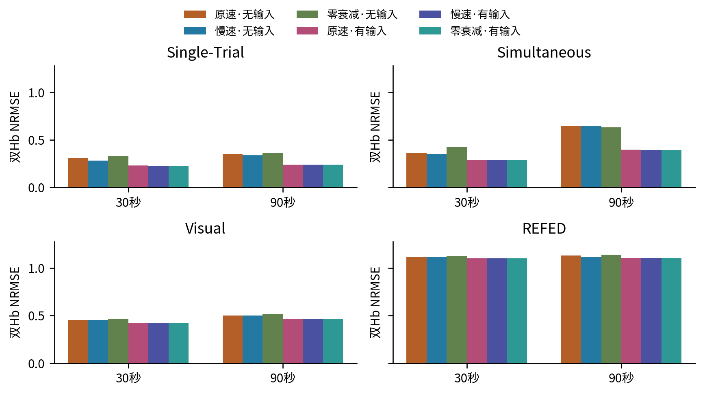
同页四数据集使用统一纵轴；六色定义在全报告保持一致。完整条件评分全窗，遮挡条件仅评分隐藏Hb；SD均来自冻结训练数据。
证据：metrics.csv stage=measured condition=joint_full; summary.json groups/paired
本页最大绝对改善出现在Simultaneous 90秒的原速·有输入：0.645降至0.399。最不利比较为Simultaneous 30秒的零衰减·无输入：改善-0.072，区间[-0.144, -0.013]。八个数据集×长度条件的同衰减率输入收益中位数为：原速·无输入下+0.052；慢速·无输入下+0.044；零衰减·无输入下+0.077。这些中位数仅描述条件差异。
| 数据集 | 秒 | 原→慢无输入 | 原→零无输入 | 原速：无→有 | 慢速：无→有 | 零衰减：无→有 |
|---|---|---|---|---|---|---|
| Single-Trial | 30 | 0.026 [-0.006, 0.065] 12记录/6被试 | -0.022 [-0.042, -0.004] 12记录/6被试 | 0.076 [0.027, 0.118] 12记录/6被试 | 0.056 [0.031, 0.079] 12记录/6被试 | 0.104 [0.035, 0.170] 12记录/6被试 |
| Single-Trial | 90 | 0.016 [-0.005, 0.031] 12记录/6被试 | -0.012 [-0.023, -0.004] 12记录/6被试 | 0.110 [0.044, 0.161] 12记录/6被试 | 0.097 [0.041, 0.137] 12记录/6被试 | 0.125 [0.049, 0.180] 12记录/6被试 |
| Simultaneous | 30 | 0.003 [-0.022, 0.029] 12记录/6被试 | -0.072 [-0.144, -0.013] 12记录/6被试 | 0.067 [0.047, 0.090] 12记录/6被试 | 0.068 [0.049, 0.093] 12记录/6被试 | 0.142 [0.064, 0.242] 12记录/6被试 |
| Simultaneous | 90 | 0.001 [-0.018, 0.028] 12记录/6被试 | 0.014 [-0.028, 0.065] 12记录/6被试 | 0.246 [0.192, 0.301] 12记录/6被试 | 0.251 [0.177, 0.318] 12记录/6被试 | 0.238 [0.216, 0.260] 12记录/6被试 |
| Visual | 30 | -0.002 [-0.008, 0.002] 12记录/6被试 | -0.010 [-0.022, -0.002] 12记录/6被试 | 0.027 [0.019, 0.039] 12记录/6被试 | 0.030 [0.018, 0.049] 12记录/6被试 | 0.037 [0.022, 0.065] 12记录/6被试 |
| Visual | 90 | 0.001 [-0.007, 0.008] 12记录/6被试 | -0.016 [-0.027, -0.007] 12记录/6被试 | 0.037 [0.026, 0.048] 12记录/6被试 | 0.032 [0.018, 0.051] 12记录/6被试 | 0.050 [0.036, 0.067] 12记录/6被试 |
| REFED | 30 | 0.001 [-0.001, 0.003] 12记录/6被试 | -0.013 [-0.022, -0.005] 12记录/6被试 | 0.015 [0.010, 0.022] 12记录/6被试 | 0.015 [0.010, 0.021] 12记录/6被试 | 0.029 [0.016, 0.039] 12记录/6被试 |
| REFED | 90 | 0.011 [-0.001, 0.024] 12记录/6被试 | -0.010 [-0.014, -0.004] 12记录/6被试 | 0.027 [0.011, 0.041] 12记录/6被试 | 0.017 [0.010, 0.022] 12记录/6被试 | 0.037 [0.018, 0.056] 12记录/6被试 |
单元格为参考NRMSE减候选NRMSE及95%被试配对区间；正数表示候选更好。“原→慢/零”检验无输入衰减率；后三列在相同衰减率下检验持续输入。不同衰减率的输入收益还受相同输入先验与系统滤波共同影响，不能只据有输入臂的排名识别真实时间常数。
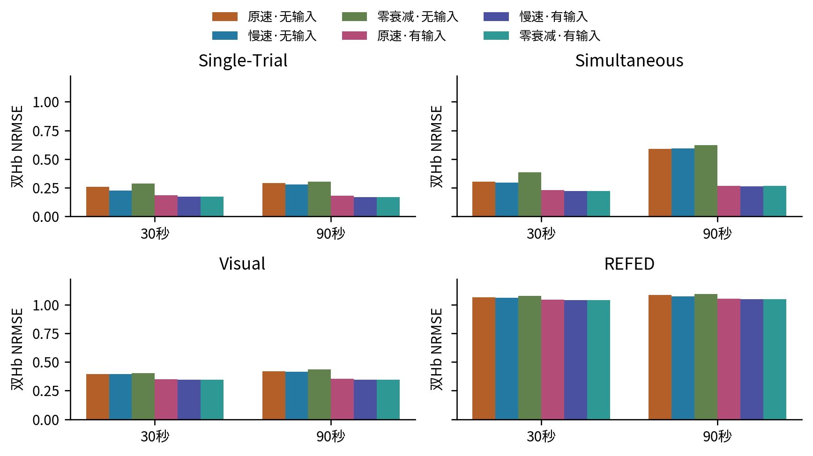
同页四数据集使用统一纵轴；六色定义在全报告保持一致。完整条件评分全窗，遮挡条件仅评分隐藏Hb；SD均来自冻结训练数据。
证据：metrics.csv stage=measured condition=Hb_only_full; summary.json groups/paired
本页最大绝对改善出现在Simultaneous 90秒的原速·有输入：0.588降至0.266。最不利比较为Simultaneous 30秒的零衰减·无输入：改善-0.081，区间[-0.157, -0.015]。八个数据集×长度条件的同衰减率输入收益中位数为：原速·无输入下+0.069；慢速·无输入下+0.060；零衰减·无输入下+0.102。这些中位数仅描述条件差异。
| 数据集 | 秒 | 原→慢无输入 | 原→零无输入 | 原速：无→有 | 慢速：无→有 | 零衰减：无→有 |
|---|---|---|---|---|---|---|
| Single-Trial | 30 | 0.035 [-0.009, 0.087] 12记录/6被试 | -0.026 [-0.046, -0.005] 12记录/6被试 | 0.076 [0.019, 0.135] 12记录/6被试 | 0.052 [0.025, 0.072] 12记录/6被试 | 0.113 [0.029, 0.200] 12记录/6被试 |
| Single-Trial | 90 | 0.012 [-0.006, 0.024] 12记录/6被试 | -0.013 [-0.026, -0.004] 12记录/6被试 | 0.111 [0.039, 0.173] 12记录/6被试 | 0.111 [0.045, 0.170] 12记录/6被试 | 0.136 [0.055, 0.202] 12记录/6被试 |
| Simultaneous | 30 | 0.008 [-0.023, 0.040] 12记录/6被试 | -0.081 [-0.157, -0.015] 12记录/6被试 | 0.072 [0.057, 0.095] 12记录/6被试 | 0.071 [0.055, 0.099] 12记录/6被试 | 0.160 [0.078, 0.264] 12记录/6被试 |
| Simultaneous | 90 | -0.004 [-0.028, 0.032] 12记录/6被试 | 0.006 [-0.024, 0.039] 11记录/6被试 | 0.321 [0.253, 0.409] 12记录/6被试 | 0.327 [0.233, 0.435] 12记录/6被试 | 0.382 [0.232, 0.606] 11记录/6被试 |
| Visual | 30 | -0.002 [-0.008, 0.003] 12记录/6被试 | -0.011 [-0.028, -0.002] 12记录/6被试 | 0.041 [0.012, 0.109] 12记录/6被试 | 0.048 [0.013, 0.131] 12记录/6被试 | 0.058 [0.016, 0.152] 12记录/6被试 |
| Visual | 90 | 0.004 [-0.004, 0.011] 12记录/6被试 | -0.018 [-0.034, -0.008] 12记录/6被试 | 0.066 [0.030, 0.126] 12记录/6被试 | 0.069 [0.028, 0.144] 12记录/6被试 | 0.091 [0.042, 0.166] 12记录/6被试 |
| REFED | 30 | 0.003 [-0.001, 0.006] 12记录/6被试 | -0.014 [-0.024, -0.005] 12记录/6被试 | 0.018 [0.011, 0.023] 12记录/6被试 | 0.019 [0.013, 0.023] 12记录/6被试 | 0.036 [0.019, 0.052] 12记录/6被试 |
| REFED | 90 | 0.012 [-0.000, 0.026] 12记录/6被试 | -0.010 [-0.015, -0.004] 12记录/6被试 | 0.033 [0.015, 0.053] 12记录/6被试 | 0.026 [0.016, 0.034] 12记录/6被试 | 0.048 [0.025, 0.073] 12记录/6被试 |
单元格为参考NRMSE减候选NRMSE及95%被试配对区间；正数表示候选更好。“原→慢/零”检验无输入衰减率；后三列在相同衰减率下检验持续输入。不同衰减率的输入收益还受相同输入先验与系统滤波共同影响，不能只据有输入臂的排名识别真实时间常数。
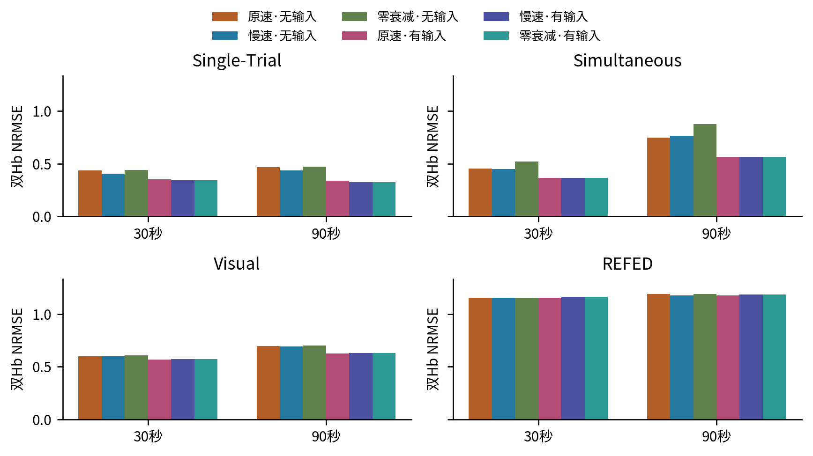
同页四数据集使用统一纵轴；六色定义在全报告保持一致。完整条件评分全窗，遮挡条件仅评分隐藏Hb；SD均来自冻结训练数据。
证据：metrics.csv stage=measured condition=joint_blocked; summary.json groups/paired
本页最大绝对改善出现在Simultaneous 90秒的原速·有输入：0.749降至0.568。最不利比较为Simultaneous 90秒的零衰减·无输入：改善-0.130，区间[-0.276, +0.007]。八个数据集×长度条件的同衰减率输入收益中位数为：原速·无输入下+0.077；慢速·无输入下+0.060；零衰减·无输入下+0.084。这些中位数仅描述条件差异。
| 数据集 | 秒 | 原→慢无输入 | 原→零无输入 | 原速：无→有 | 慢速：无→有 | 零衰减：无→有 |
|---|---|---|---|---|---|---|
| Single-Trial | 30 | 0.033 [-0.012, 0.085] 12记录/6被试 | -0.006 [-0.015, 0.009] 12记录/6被试 | 0.085 [0.024, 0.145] 12记录/6被试 | 0.059 [0.025, 0.089] 12记录/6被试 | 0.098 [0.017, 0.188] 12记录/6被试 |
| Single-Trial | 90 | 0.031 [-0.014, 0.063] 12记录/6被试 | -0.006 [-0.013, -0.001] 12记录/6被试 | 0.127 [0.065, 0.187] 12记录/6被试 | 0.113 [0.045, 0.173] 12记录/6被试 | 0.149 [0.069, 0.230] 12记录/6被试 |
| Simultaneous | 30 | 0.002 [-0.015, 0.017] 12记录/6被试 | -0.067 [-0.147, -0.008] 12记录/6被试 | 0.085 [0.051, 0.115] 12记录/6被试 | 0.086 [0.044, 0.137] 12记录/6被试 | 0.154 [0.062, 0.252] 12记录/6被试 |
| Simultaneous | 90 | -0.017 [-0.094, 0.050] 12记录/6被试 | -0.130 [-0.276, 0.007] 12记录/6被试 | 0.181 [0.132, 0.233] 12记录/6被试 | 0.200 [0.096, 0.338] 12记录/6被试 | 0.315 [0.129, 0.523] 12记录/6被试 |
| Visual | 30 | -0.001 [-0.007, 0.005] 12记录/6被试 | -0.010 [-0.018, -0.002] 12记录/6被试 | 0.030 [0.008, 0.044] 12记录/6被试 | 0.026 [-0.004, 0.047] 12记录/6被试 | 0.035 [0.008, 0.053] 12记录/6被试 |
| Visual | 90 | 0.005 [-0.009, 0.018] 12记录/6被试 | -0.004 [-0.008, 0.001] 12记录/6被试 | 0.070 [0.029, 0.110] 12记录/6被试 | 0.061 [0.014, 0.103] 12记录/6被试 | 0.069 [0.013, 0.123] 12记录/6被试 |
| REFED | 30 | 0.003 [-0.005, 0.010] 12记录/6被试 | -0.001 [-0.011, 0.007] 12记录/6被试 | 0.001 [-0.015, 0.025] 12记录/6被试 | -0.012 [-0.030, 0.015] 12记录/6被试 | -0.008 [-0.033, 0.032] 12记录/6被试 |
| REFED | 90 | 0.012 [-0.005, 0.025] 12记录/6被试 | -0.001 [-0.004, 0.001] 12记录/6被试 | 0.011 [-0.001, 0.026] 12记录/6被试 | -0.010 [-0.041, 0.016] 12记录/6被试 | 0.003 [-0.014, 0.024] 12记录/6被试 |
单元格为参考NRMSE减候选NRMSE及95%被试配对区间；正数表示候选更好。“原→慢/零”检验无输入衰减率；后三列在相同衰减率下检验持续输入。不同衰减率的输入收益还受相同输入先验与系统滤波共同影响，不能只据有输入臂的排名识别真实时间常数。
隐藏段不进入拟合目标，但两侧Hb和整个EEG可见。此为离线条件插值，不能称实时或未来预测；区间跨零时，当前6名被试不足以确认一致收益。
| 支持 | 数据集 | 秒 | HbO 原→慢 | HbO 原速加输入 | HbR 原→慢 | HbR 原速加输入 |
|---|---|---|---|---|---|---|
| 完整 | Single-Trial | 30 | 0.021 [-0.001, 0.045] 12记录/6被试 | 0.095 [0.041, 0.140] 12记录/6被试 | 0.034 [-0.041, 0.093] 12记录/6被试 | 0.051 [-0.003, 0.096] 12记录/6被试 |
| 完整 | Single-Trial | 90 | 0.032 [0.008, 0.049] 12记录/6被试 | 0.150 [0.083, 0.200] 12记录/6被试 | -0.006 [-0.030, 0.008] 12记录/6被试 | 0.059 [-0.020, 0.118] 12记录/6被试 |
| 完整 | Simultaneous | 30 | 0.011 [-0.013, 0.033] 12记录/6被试 | 0.107 [0.082, 0.129] 12记录/6被试 | -0.006 [-0.033, 0.025] 12记录/6被试 | 0.025 [0.010, 0.055] 12记录/6被试 |
| 完整 | Simultaneous | 90 | 0.027 [0.009, 0.048] 12记录/6被试 | 0.321 [0.245, 0.390] 12记录/6被试 | -0.026 [-0.065, 0.020] 12记录/6被试 | 0.178 [0.131, 0.228] 12记录/6被试 |
| 完整 | Visual | 30 | 0.007 [-0.000, 0.013] 12记录/6被试 | 0.060 [0.044, 0.080] 12记录/6被试 | -0.011 [-0.018, -0.004] 12记录/6被试 | -0.001 [-0.024, 0.013] 12记录/6被试 |
| 完整 | Visual | 90 | 0.014 [0.006, 0.019] 12记录/6被试 | 0.111 [0.077, 0.137] 12记录/6被试 | -0.010 [-0.026, 0.002] 12记录/6被试 | -0.022 [-0.058, -0.005] 12记录/6被试 |
| 完整 | REFED | 30 | 0.005 [-0.002, 0.015] 12记录/6被试 | 0.037 [0.025, 0.058] 12记录/6被试 | -0.001 [-0.007, 0.002] 12记录/6被试 | 0.003 [-0.003, 0.006] 12记录/6被试 |
| 完整 | REFED | 90 | 0.014 [0.002, 0.026] 12记录/6被试 | 0.048 [0.033, 0.060] 12记录/6被试 | 0.009 [-0.004, 0.025] 12记录/6被试 | 0.017 [-0.003, 0.036] 12记录/6被试 |
| 隐藏 | Single-Trial | 30 | 0.049 [-0.014, 0.117] 12记录/6被试 | 0.133 [0.036, 0.227] 12记录/6被试 | 0.004 [-0.033, 0.031] 12记录/6被试 | 0.002 [-0.016, 0.009] 12记录/6被试 |
| 隐藏 | Single-Trial | 90 | 0.046 [-0.015, 0.087] 12记录/6被试 | 0.206 [0.116, 0.283] 12记录/6被试 | 0.003 [-0.014, 0.024] 12记录/6被试 | -0.006 [-0.046, 0.038] 12记录/6被试 |
| 隐藏 | Simultaneous | 30 | 0.021 [-0.004, 0.043] 12记录/6被试 | 0.159 [0.114, 0.197] 12记录/6被试 | -0.027 [-0.047, -0.011] 12记录/6被试 | -0.012 [-0.033, 0.008] 12记录/6被试 |
| 隐藏 | Simultaneous | 90 | 0.016 [-0.101, 0.129] 12记录/6被试 | 0.324 [0.225, 0.463] 12记录/6被试 | -0.059 [-0.106, 0.011] 12记录/6被试 | 0.028 [-0.001, 0.065] 12记录/6被试 |
| 隐藏 | Visual | 30 | 0.016 [-0.011, 0.041] 12记录/6被试 | 0.103 [0.031, 0.169] 12记录/6被试 | -0.015 [-0.035, 0.008] 12记录/6被试 | -0.022 [-0.035, -0.010] 12记录/6被试 |
| 隐藏 | Visual | 90 | 0.024 [-0.008, 0.046] 12记录/6被试 | 0.210 [0.112, 0.282] 12记录/6被试 | -0.014 [-0.032, 0.008] 12记录/6被试 | -0.046 [-0.078, -0.026] 12记录/6被试 |
| 隐藏 | REFED | 30 | 0.017 [-0.003, 0.034] 12记录/6被试 | 0.003 [-0.042, 0.057] 12记录/6被试 | -0.006 [-0.011, 0.000] 12记录/6被试 | -0.000 [-0.013, 0.014] 12记录/6被试 |
| 隐藏 | REFED | 90 | 0.024 [-0.013, 0.048] 12记录/6被试 | 0.021 [-0.025, 0.070] 12记录/6被试 | 0.006 [-0.005, 0.017] 12记录/6被试 | 0.006 [-0.006, 0.015] 12记录/6被试 |
Visual的原速加输入需要单独警惕：90秒完整拟合HbR改善为-0.022 [-0.058, -0.005]；隐藏30/90秒分别为-0.022 [-0.035, -0.010]、-0.046 [-0.078, -0.026]。双Hb平均改善不能表述为两个Hb都改善；负差表示该分量受损。
所有数值均为该分量的配对NRMSE改善及95%被试区间。HbR没有直接状态差贡献；完整重新拟合后HbR变化反映r与初态的联合补偿，不能说是状态差直接驱动了HbR。结合固定上游重放，才能区分直接数学效应与重新拟合后的整体折中。
每行计划12条记录、6名被试；只在双方数值合格且评分有限的记录上计算配对区间，格内列出实际记录/被试数。失败全数保留在末页分母表，缺失不能当作零误差。
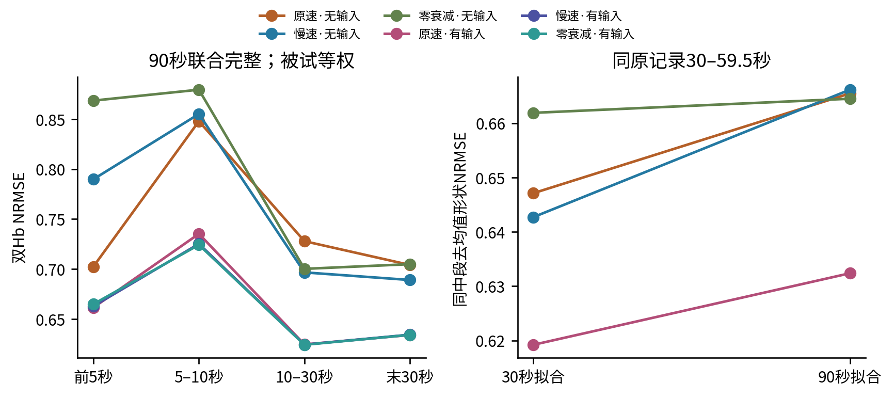
左图按时间段分别计算误差，不在各段重估SD。右图只评分两种拟合都覆盖的同一119个时间点，并在每条记录、每个Hb内去残差均值。各数据集被试等权；详细逐数据集比较在下表。
证据：measured/*.npz target/predictions/sd; matched original center indices
| 数据集 | 拟合秒数 | 原速同段形状误差 | 减慢衰减改善 | 原速加输入改善 |
|---|---|---|---|---|
| Single-Trial | 30 | 0.309 | 0.027 [-0.004, 0.066] 12记录/6被试 | 0.076 [0.027, 0.118] 12记录/6被试 |
| Single-Trial | 90 | 0.326 | -0.007 [-0.011, -0.002] 12记录/6被试 | 0.074 [0.021, 0.117] 12记录/6被试 |
| Simultaneous | 30 | 0.357 | 0.006 [-0.017, 0.031] 12记录/6被试 | 0.067 [0.047, 0.090] 12记录/6被试 |
| Simultaneous | 90 | 0.404 | -0.006 [-0.015, 0.006] 12记录/6被试 | 0.098 [0.058, 0.147] 12记录/6被试 |
| Visual | 30 | 0.453 | -0.001 [-0.006, 0.003] 12记录/6被试 | 0.027 [0.019, 0.039] 12记录/6被试 |
| Visual | 90 | 0.469 | -0.001 [-0.003, 0.002] 12记录/6被试 | 0.020 [0.013, 0.029] 12记录/6被试 |
| REFED | 30 | 1.116 | 0.002 [-0.001, 0.004] 12记录/6被试 | 0.015 [0.010, 0.022] 12记录/6被试 |
| REFED | 90 | 1.132 | 0.003 [-0.002, 0.008] 12记录/6被试 | 0.019 [0.008, 0.027] 12记录/6被试 |
两种长度使用同一原记录，但30秒窗以其起点前5秒重新参考。去残差均值能隔离常量参考差；它不更改原始主评分。90秒拟合多看前后数据，因此这不是只改变长度的纯因果对照。早段/晚段分割是描述性终点，时间点不是独立重复。
同一中段去均值后，原速加输入有8/8个条件的收益区间高于零。因此若全窗收益也存在，它不能全部归为参考常量；这仍是波形误差证据，不等于绝对状态或生理来源已恢复。
| 90秒联合完整 | 可用 | 数据 | 驱动曲率 | 初态 | flow | 输入 | 驱动变化 | 体积v变化 | 去氧q变化 |
|---|---|---|---|---|---|---|---|---|---|
| 原速·无输入 | 48/48 | 426.586 | 0.122 | 5.558 | 4.525 | 0.000 | 0.000 | 0.000 | 0.000 |
| 慢速·无输入 | 48/48 | 415.157 | 0.122 | 6.856 | 8.797 | 0.000 | 0.011 | 0.015 | 0.022 |
| 零衰减·无输入 | 48/48 | 432.398 | 0.122 | 9.856 | 32.140 | 0.000 | 0.013 | 0.026 | 0.031 |
| 原速·有输入 | 48/48 | 332.052 | 0.122 | 4.213 | 4.165 | 14.002 | 0.011 | 0.013 | 0.020 |
| 慢速·有输入 | 48/48 | 330.053 | 0.122 | 3.668 | 3.099 | 4.769 | 0.016 | 0.018 | 0.028 |
| 零衰减·有输入 | 48/48 | 329.906 | 0.122 | 3.370 | 3.245 | 4.820 | 0.016 | 0.018 | 0.028 |
前五个数值列为目标函数中已经加权的平方代价，单位为目标函数单位。数据项包含可见EEG与两Hb，不能当作双Hb主NRMSE；曲率、初态、flow与输入项的权重不同，其大小只反映当前优化合同。输入工程先验不是生理校准分布。
最后三列先在每条记录对候选与该记录原速拟合的驱动、v、q之差计算全窗RMS，再在被试内平均记录、对“数据集×被试”等权平均。它们是状态坐标变化，未除以训练SD；v与q无量纲。数值更大表示重新拟合对上游作了更多补偿，不表示更接近真值。
本表只使用双方没有缺失的保留指标与数值合格拟合；可用数量明确列出。固定上游重放中HbR保持不变；完整拟合中驱动和q可以移动，故HbR既可能受益也可能恶化。Visual的HbR负收益是这种折中的可见例子。
证据：metrics.csv逐臂weighted_data_sse、各cost与*_change_rms_from_original；代价计算由运行的solver与任务记录拥有。
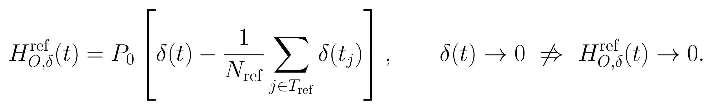
固定原速拟合的同一驱动和全部初态，只改变无输入衰减率后重放。表中每个数为90秒联合完整记录的中位数；晚段取最后30秒，先对每条记录计算，再汇总。偏移是该状态差贡献的晚段均值；波动是去晚段均值后的SD，单位均为HbO训练SD。
| 数据集 | 无输入臂 | 晚段偏移/训练SD | 晚段波动SD/训练SD | 可用记录 | HbR最大绝对差 |
|---|---|---|---|---|---|
| Single-Trial | 原速·无输入 | -0.078 | 0.000 | 12/12 | 0.0e+00 |
| Single-Trial | 慢速·无输入 | -0.183 | 0.009 | 12/12 | 0.0e+00 |
| Single-Trial | 零衰减·无输入 | 0.000 | 0.000 | 12/12 | 0.0e+00 |
| Simultaneous | 原速·无输入 | 0.434 | 0.000 | 12/12 | 0.0e+00 |
| Simultaneous | 慢速·无输入 | 0.947 | 0.031 | 12/12 | 0.0e+00 |
| Simultaneous | 零衰减·无输入 | -0.000 | 0.000 | 11/12 | 0.0e+00 |
| Visual | 原速·无输入 | 0.054 | 0.000 | 12/12 | 0.0e+00 |
| Visual | 慢速·无输入 | 0.118 | 0.020 | 12/12 | 0.0e+00 |
| Visual | 零衰减·无输入 | 0.000 | 0.000 | 12/12 | 0.0e+00 |
| REFED | 原速·无输入 | -0.581 | 0.000 | 12/12 | 0.0e+00 |
| REFED | 慢速·无输入 | -1.349 | 0.020 | 12/12 | 0.0e+00 |
| REFED | 零衰减·无输入 | 0.000 | 0.000 | 12/12 | 0.0e+00 |
联合完整条件的两种长度共计划288个无输入重放臂，保留可核对数组287个、缺失1个。反事实若越出物理域则结果不可用；不会反过来把原模型已收敛且通过积分检查的拟合算作失败。JSON中的重放状态另行保留。
| 物理域失败的反事实任务 | 臂 | 最小p | 最小氧合可行量 | 对应秒数 |
|---|---|---|---|---|
| simultaneous_eeg_nirs__VP001__prefrontal__r1_90_Hb_only_full | 零衰减·无输入 | 0.350 | -0.02912 | 7.75 |
| simultaneous_eeg_nirs__VP001__prefrontal__r1_90_joint_blocked | 零衰减·无输入 | 0.396 | -0.02692 | 35.75 |
| simultaneous_eeg_nirs__VP001__prefrontal__r1_90_joint_full | 零衰减·无输入 | 0.383 | -0.04956 | 35.25 |
失败仅属于固定原驱动/初态的反事实。本轮零衰减反事实可由保存的v加初始状态差直接核对：即使p仍为正，总Hb基线尺度乘p减去去氧基线尺度乘q仍可能为负，违反物理域。上表用保存时间节点的代数值，没有重新积分、裁剪或重新拟合。
首5秒参考会减去状态差早期平均值；即便原速状态差随后衰减至零，参考后的HbO贡献仍可停在一个常量。零衰减的原始状态差恒定，理想参考会把它完全消掉。因此“状态差尚存”“参考输出尚有偏移”“仍在振荡”是三个不同判断。
上式展示参考运算的直观形式，报告数值使用保存的完整观测算子，因此保留插值与处理约定。固定上游HbR不变由数组独立核验；全重新拟合中的HbR改善属于补偿结果，不能据此给状态差增加新物理来源。
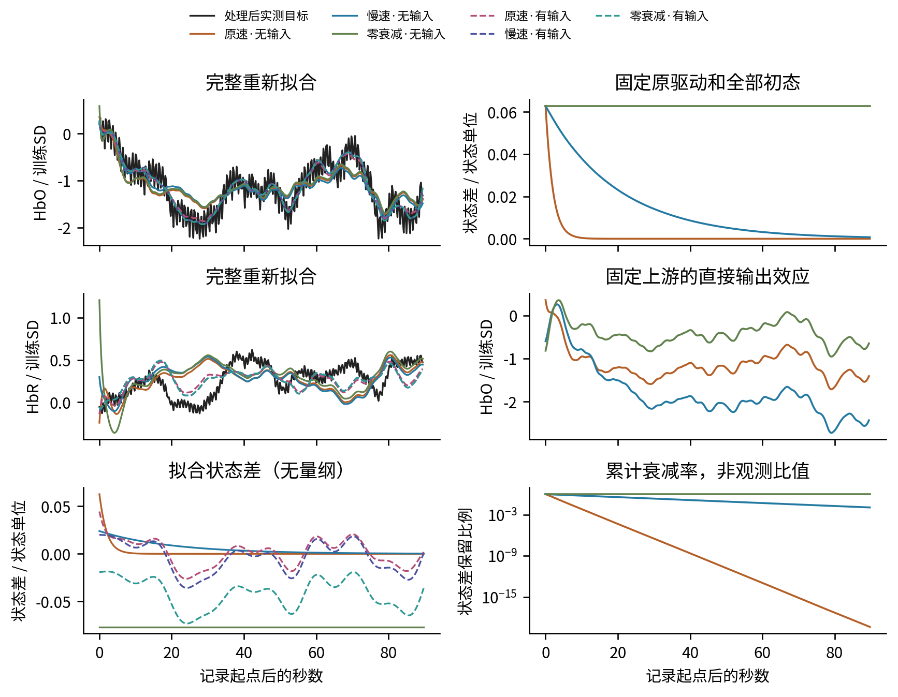
左列：目标与六臂完整预测、相应状态差；右列：固定上游、无输入的三种衰减率重放。实线为无输入，虚线为有输入；右下为对数轴。每行两图的物理量不同，纵轴依单位独立标明；HbR重放重合故不重复画。
证据：measured/eeg_fnirs_single_trial__subject_07__prefrontal__r0_90_joint_full.json/.npz
| 本记录双Hb NRMSE | 原速·无输入 | 慢速·无输入 | 零衰减·无输入 | 原速·有输入 | 慢速·有输入 | 零衰减·有输入 |
|---|---|---|---|---|---|---|
| 数值 | 0.303 | 0.308 | 0.316 | 0.213 | 0.208 | 0.208 |
样例按本数据集90秒原速联合完整误差升序，取上中位数，并列按key排序；候选方法共享此规则，失败不从候选分母中消失。本页仅用于解释，不用于选模。身份：{'id': 'eeg_fnirs_single_trial__subject_07__prefrontal__r0', 'dataset': 'eeg_fnirs_single_trial', 'subject': 'subject_07', 'task': 'motor_imagery', 'anchor': {'region': 'prefrontal', 'hb_pair': 0, 'hb_channel': 'AF7Fp1', 'eeg_indices': [1, 3, 0, 2, 4, 8], 'eeg_channels': ['AFF5h', 'AFp1', 'F7', 'F3', 'AFp2', 'AFF1h'], 'hb_geometry': {'schema': 'canonical_channel_geometry_v1', 'channel_name': 'AF7Fp1_HbO', 'base_channel_name': 'AF7Fp1', 'component': 'HbO', 'modality': 'fnirs', 'x': -0.4539841719334849, 'y': 0.8910097469002305, 'z': 5.062267751265442e-05, 'coordinate_system': 'dataset_mnt_pos_3d', 'coordinate_units': 'normalized_head_unit', 'source_index': 2, 'detector_index': 1, 'position_available': True, 'coordinate_status': 'source_geometry', 'measured_subject_coordinate': None, 'intended_use': None, 'source_file': 'data/EEG+NIRS Single-Trial/NIRS_01-29/subject 07/mnt.mat'}, 'eeg_geometry': [{'schema': 'canonical_channel_geometry_v1', 'channel_name': 'AFF5h', 'base_channel_name': 'AFF5h', 'component': 'eeg', 'modality': 'eeg', 'x': -0.5417, 'y': 0.7777, 'z': 0.3163, 'coordinate_system': 'dataset_mnt_pos_3d', 'coordinate_units': 'normalized_head_unit', 'source_index': None, 'detector_index': None, 'position_available': True, 'coordinate_status': 'source_geometry', 'measured_subject_coordinate': None, 'intended_use': None, 'source_file': 'data/EEG+NIRS Single-Trial/EEG_01-29/subject 07/mnt_artifact.mat'}, {'schema': 'canonical_channel_geometry_v1', 'channel_name': 'AFp1', 'base_channel_name': 'AFp1', 'component': 'eeg', 'modality': 'eeg', 'x': -0.1287, 'y': 0.9743, 'z': 0.1828, 'coordinate_system': 'dataset_mnt_pos_3d', 'coordinate_units': 'normalized_head_unit', 'source_index': None, 'detector_index': None, 'position_available': True, 'coordinate_status': 'source_geometry', 'measured_subject_coordinate': None, 'intended_use': None, 'source_file': 'data/EEG+NIRS Single-Trial/EEG_01-29/subject 07/mnt_artifact.mat'}, {'schema': 'canonical_channel_geometry_v1', 'channel_name': 'F7', 'base_channel_name': 'F7', 'component': 'eeg', 'modality': 'eeg', 'x': -0.809, 'y': 0.5878, 'z': 0.0, 'coordinate_system': 'dataset_mnt_pos_3d', 'coordinate_units': 'normalized_head_unit', 'source_index': None, 'detector_index': None, 'position_available': True, 'coordinate_status': 'source_geometry', 'measured_subject_coordinate': None, 'intended_use': None, 'source_file': 'data/EEG+NIRS Single-Trial/EEG_01-29/subject 07/mnt_artifact.mat'}, {'schema': 'canonical_channel_geometry_v1', 'channel_name': 'F3', 'base_channel_name': 'F3', 'component': 'eeg', 'modality': 'eeg', 'x': -0.5399, 'y': 0.6726, 'z': 0.5043, 'coordinate_system': 'dataset_mnt_pos_3d', 'coordinate_units': 'normalized_head_unit', 'source_index': None, 'detector_index': None, 'position_available': True, 'coordinate_status': 'source_geometry', 'measured_subject_coordinate': None, 'intended_use': None, 'source_file': 'data/EEG+NIRS Single-Trial/EEG_01-29/subject 07/mnt_artifact.mat'}, {'schema': 'canonical_channel_geometry_v1', 'channel_name': 'AFp2', 'base_channel_name': 'AFp2', 'component': 'eeg', 'modality': 'eeg', 'x': 0.1287, 'y': 0.9743, 'z': 0.1828, 'coordinate_system': 'dataset_mnt_pos_3d', 'coordinate_units': 'normalized_head_unit', 'source_index': None, 'detector_index': None, 'position_available': True, 'coordinate_status': 'source_geometry', 'measured_subject_coordinate': None, 'intended_use': None, 'source_file': 'data/EEG+NIRS Single-Trial/EEG_01-29/subject 07/mnt_artifact.mat'}, {'schema': 'canonical_channel_geometry_v1', 'channel_name': 'AFF1h', 'base_channel_name': 'AFF1h', 'component': 'eeg', 'modality': 'eeg', 'x': -0.122, 'y': 0.8289, 'z': 0.5452, 'coordinate_system': 'dataset_mnt_pos_3d', 'coordinate_units': 'normalized_head_unit', 'source_index': None, 'detector_index': None, 'position_available': True, 'coordinate_status': 'source_geometry', 'measured_subject_coordinate': None, 'intended_use': None, 'source_file': 'data/EEG+NIRS Single-Trial/EEG_01-29/subject 07/mnt_artifact.mat'}], 'spatial_claim': 'registered_dataset_geometry_not_individual_source_localization'}}。
HbO实测峰谷差2.57训练SD、最大值在0.25秒；原速·无输入峰谷差2.07、最大值时刻0.00秒；慢速·无输入峰谷差2.03、最大值时刻0.00秒；原速·有输入峰谷差2.12、最大值时刻0.00秒。 HbR实测峰谷差0.75训练SD、最大值在42.25秒；原速·无输入峰谷差0.80、最大值时刻80.50秒；慢速·无输入峰谷差0.64、最大值时刻30.00秒；原速·有输入峰谷差0.62、最大值时刻80.25秒。
峰谷差在同一冻结训练SD坐标计算；全窗最大值时刻仅为描述，不等同于生理潜伏期。右侧隔离衰减率直接效应；晚段常量输出按参考偏移解释，不能称新增振荡。
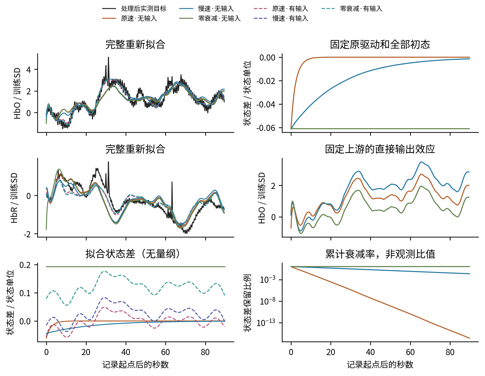
左列：目标与六臂完整预测、相应状态差；右列：固定上游、无输入的三种衰减率重放。实线为无输入，虚线为有输入；右下为对数轴。每行两图的物理量不同，纵轴依单位独立标明；HbR重放重合故不重复画。
证据：measured/simultaneous_eeg_nirs__VP004__prefrontal__r0_90_joint_full.json/.npz
| 本记录双Hb NRMSE | 原速·无输入 | 慢速·无输入 | 零衰减·无输入 | 原速·有输入 | 慢速·有输入 | 零衰减·有输入 |
|---|---|---|---|---|---|---|
| 数值 | 0.568 | 0.577 | 0.580 | 0.422 | 0.424 | 0.423 |
样例按本数据集90秒原速联合完整误差升序，取上中位数，并列按key排序；候选方法共享此规则，失败不从候选分母中消失。本页仅用于解释，不用于选模。身份：{'id': 'simultaneous_eeg_nirs__VP004__prefrontal__r0', 'dataset': 'simultaneous_eeg_nirs', 'subject': 'VP004', 'task': 'wg', 'anchor': {'region': 'prefrontal', 'hb_pair': 2, 'hb_channel': 'AFp7', 'eeg_indices': [0, 1, 2, 3, 16, 4], 'eeg_channels': ['Fp1', 'AFF5h', 'AFz', 'F1', 'Fp2', 'FC5'], 'hb_geometry': {'schema': 'canonical_channel_geometry_v1', 'channel_name': 'AFp7_HbO', 'base_channel_name': 'AFp7', 'component': 'HbO', 'modality': 'fnirs', 'x': -0.454, 'y': 0.891, 'z': 0.0, 'coordinate_system': 'dataset_mnt_pos_3d', 'coordinate_units': 'normalized_head_unit', 'source_index': None, 'detector_index': None, 'position_available': True, 'coordinate_status': 'source_geometry', 'measured_subject_coordinate': None, 'intended_use': None, 'source_file': 'data/Simultaneous EEG&NIRS/VP004-NIRS/mnt_wg.mat'}, 'eeg_geometry': [{'schema': 'canonical_channel_geometry_v1', 'channel_name': 'Fp1', 'base_channel_name': 'Fp1', 'component': 'eeg', 'modality': 'eeg', 'x': -0.309, 'y': 0.9511, 'z': 0.0001, 'coordinate_system': 'dataset_mnt_pos_3d', 'coordinate_units': 'normalized_head_unit', 'source_index': None, 'detector_index': None, 'position_available': True, 'coordinate_status': 'source_geometry', 'measured_subject_coordinate': None, 'intended_use': None, 'source_file': 'data/Simultaneous EEG&NIRS/VP004-EEG/mnt_wg.mat'}, {'schema': 'canonical_channel_geometry_v1', 'channel_name': 'AFF5h', 'base_channel_name': 'AFF5h', 'component': 'eeg', 'modality': 'eeg', 'x': -0.5417, 'y': 0.7777, 'z': 0.3163, 'coordinate_system': 'dataset_mnt_pos_3d', 'coordinate_units': 'normalized_head_unit', 'source_index': None, 'detector_index': None, 'position_available': True, 'coordinate_status': 'source_geometry', 'measured_subject_coordinate': None, 'intended_use': None, 'source_file': 'data/Simultaneous EEG&NIRS/VP004-EEG/mnt_wg.mat'}, {'schema': 'canonical_channel_geometry_v1', 'channel_name': 'AFz', 'base_channel_name': 'AFz', 'component': 'eeg', 'modality': 'eeg', 'x': -0.0, 'y': 0.923, 'z': 0.3824, 'coordinate_system': 'dataset_mnt_pos_3d', 'coordinate_units': 'normalized_head_unit', 'source_index': None, 'detector_index': None, 'position_available': True, 'coordinate_status': 'source_geometry', 'measured_subject_coordinate': None, 'intended_use': None, 'source_file': 'data/Simultaneous EEG&NIRS/VP004-EEG/mnt_wg.mat'}, {'schema': 'canonical_channel_geometry_v1', 'channel_name': 'F1', 'base_channel_name': 'F1', 'component': 'eeg', 'modality': 'eeg', 'x': -0.2888, 'y': 0.6979, 'z': 0.6542, 'coordinate_system': 'dataset_mnt_pos_3d', 'coordinate_units': 'normalized_head_unit', 'source_index': None, 'detector_index': None, 'position_available': True, 'coordinate_status': 'source_geometry', 'measured_subject_coordinate': None, 'intended_use': None, 'source_file': 'data/Simultaneous EEG&NIRS/VP004-EEG/mnt_wg.mat'}, {'schema': 'canonical_channel_geometry_v1', 'channel_name': 'Fp2', 'base_channel_name': 'Fp2', 'component': 'eeg', 'modality': 'eeg', 'x': 0.3091, 'y': 0.9511, 'z': 0.0, 'coordinate_system': 'dataset_mnt_pos_3d', 'coordinate_units': 'normalized_head_unit', 'source_index': None, 'detector_index': None, 'position_available': True, 'coordinate_status': 'source_geometry', 'measured_subject_coordinate': None, 'intended_use': None, 'source_file': 'data/Simultaneous EEG&NIRS/VP004-EEG/mnt_wg.mat'}, {'schema': 'canonical_channel_geometry_v1', 'channel_name': 'FC5', 'base_channel_name': 'FC5', 'component': 'eeg', 'modality': 'eeg', 'x': -0.8709, 'y': 0.3373, 'z': 0.3549, 'coordinate_system': 'dataset_mnt_pos_3d', 'coordinate_units': 'normalized_head_unit', 'source_index': None, 'detector_index': None, 'position_available': True, 'coordinate_status': 'source_geometry', 'measured_subject_coordinate': None, 'intended_use': None, 'source_file': 'data/Simultaneous EEG&NIRS/VP004-EEG/mnt_wg.mat'}], 'spatial_claim': 'registered_dataset_geometry_not_individual_source_localization'}}。
HbO实测峰谷差6.60训练SD、最大值在31.25秒；原速·无输入峰谷差3.43、最大值时刻65.50秒；慢速·无输入峰谷差3.55、最大值时刻65.50秒；原速·有输入峰谷差3.99、最大值时刻33.75秒。 HbR实测峰谷差3.74训练SD、最大值在31.25秒；原速·无输入峰谷差2.74、最大值时刻6.75秒；慢速·无输入峰谷差2.28、最大值时刻6.75秒；原速·有输入峰谷差2.51、最大值时刻6.25秒。
峰谷差在同一冻结训练SD坐标计算；全窗最大值时刻仅为描述，不等同于生理潜伏期。右侧隔离衰减率直接效应；晚段常量输出按参考偏移解释，不能称新增振荡。
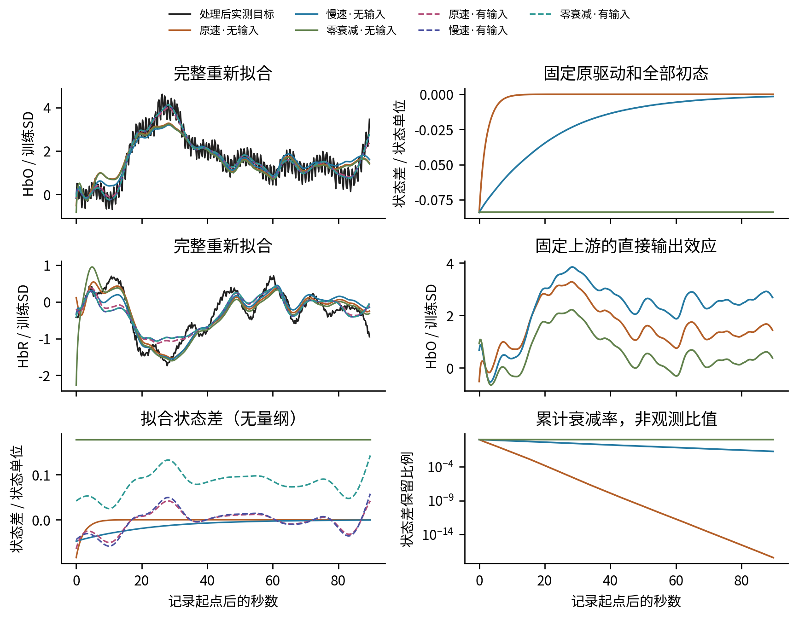
左列：目标与六臂完整预测、相应状态差；右列：固定上游、无输入的三种衰减率重放。实线为无输入，虚线为有输入；右下为对数轴。每行两图的物理量不同，纵轴依单位独立标明；HbR重放重合故不重复画。
证据：measured/visual_cognitive_motivation__S08__prefrontal__montage0__r0_90_joint_full.json/.npz
| 本记录双Hb NRMSE | 原速·无输入 | 慢速·无输入 | 零衰减·无输入 | 原速·有输入 | 慢速·有输入 | 零衰减·有输入 |
|---|---|---|---|---|---|---|
| 数值 | 0.422 | 0.419 | 0.443 | 0.334 | 0.342 | 0.341 |
样例按本数据集90秒原速联合完整误差升序，取上中位数，并列按key排序；候选方法共享此规则，失败不从候选分母中消失。本页仅用于解释，不用于选模。身份：{'id': 'visual_cognitive_motivation__S08__prefrontal__montage0__r0', 'dataset': 'visual_cognitive_motivation', 'subject': 'S08', 'task': 'visual_cognitive_motivation', 'anchor': {'region': 'prefrontal', 'hb_pair': 6, 'hb_channel': 'CH7', 'eeg_indices': [2, 0, 4, 14, 28, 16], 'eeg_channels': ['AF3', 'Fp1', 'F3', 'F5', 'Fz', 'F7'], 'hb_geometry': {'schema': 'canonical_channel_geometry_v1', 'channel_name': 'CH7_HbO', 'base_channel_name': 'CH7', 'component': 'HbO', 'modality': 'fnirs', 'x': 0.885, 'y': 0.376, 'z': 0.276, 'coordinate_system': 'referenced_visual_eeg_head_coordinates', 'coordinate_units': 'normalized_head_unit', 'source_index': None, 'detector_index': None, 'position_available': True, 'coordinate_status': 'graphical_template_eeg_anchor', 'measured_subject_coordinate': False, 'intended_use': 'within_fnirs_adjacency_and_coarse_eeg_fnirs_alignment_only', 'source_file': 'data/A simultaneous EEG-fNIRS dataset of the visual cognitive motivation study in healthy adults/Graphical_recording_head_model.pdf'}, 'eeg_geometry': [{'schema': 'canonical_channel_geometry_v1', 'channel_name': 'AF3', 'base_channel_name': 'AF3', 'component': 'eeg', 'modality': 'eeg', 'x': 0.885, 'y': 0.376, 'z': 0.276, 'coordinate_system': 'EEGLAB_CED_cartesian', 'coordinate_units': 'normalized_head_unit', 'source_index': None, 'detector_index': None, 'position_available': True, 'coordinate_status': 'source_geometry', 'measured_subject_coordinate': None, 'intended_use': None, 'source_file': 'data/A simultaneous EEG-fNIRS dataset of the visual cognitive motivation study in healthy adults/Location.ced'}, {'schema': 'canonical_channel_geometry_v1', 'channel_name': 'Fp1', 'base_channel_name': 'Fp1', 'component': 'eeg', 'modality': 'eeg', 'x': 0.95, 'y': 0.309, 'z': -0.0349, 'coordinate_system': 'EEGLAB_CED_cartesian', 'coordinate_units': 'normalized_head_unit', 'source_index': None, 'detector_index': None, 'position_available': True, 'coordinate_status': 'source_geometry', 'measured_subject_coordinate': None, 'intended_use': None, 'source_file': 'data/A simultaneous EEG-fNIRS dataset of the visual cognitive motivation study in healthy adults/Location.ced'}, {'schema': 'canonical_channel_geometry_v1', 'channel_name': 'F3', 'base_channel_name': 'F3', 'component': 'eeg', 'modality': 'eeg', 'x': 0.673, 'y': 0.545, 'z': 0.5, 'coordinate_system': 'EEGLAB_CED_cartesian', 'coordinate_units': 'normalized_head_unit', 'source_index': None, 'detector_index': None, 'position_available': True, 'coordinate_status': 'source_geometry', 'measured_subject_coordinate': None, 'intended_use': None, 'source_file': 'data/A simultaneous EEG-fNIRS dataset of the visual cognitive motivation study in healthy adults/Location.ced'}, {'schema': 'canonical_channel_geometry_v1', 'channel_name': 'F5', 'base_channel_name': 'F5', 'component': 'eeg', 'modality': 'eeg', 'x': 0.634, 'y': 0.729, 'z': 0.259, 'coordinate_system': 'EEGLAB_CED_cartesian', 'coordinate_units': 'normalized_head_unit', 'source_index': None, 'detector_index': None, 'position_available': True, 'coordinate_status': 'source_geometry', 'measured_subject_coordinate': None, 'intended_use': None, 'source_file': 'data/A simultaneous EEG-fNIRS dataset of the visual cognitive motivation study in healthy adults/Location.ced'}, {'schema': 'canonical_channel_geometry_v1', 'channel_name': 'Fz', 'base_channel_name': 'Fz', 'component': 'eeg', 'modality': 'eeg', 'x': 0.719, 'y': -0.0, 'z': 0.695, 'coordinate_system': 'EEGLAB_CED_cartesian', 'coordinate_units': 'normalized_head_unit', 'source_index': None, 'detector_index': None, 'position_available': True, 'coordinate_status': 'source_geometry', 'measured_subject_coordinate': None, 'intended_use': None, 'source_file': 'data/A simultaneous EEG-fNIRS dataset of the visual cognitive motivation study in healthy adults/Location.ced'}, {'schema': 'canonical_channel_geometry_v1', 'channel_name': 'F7', 'base_channel_name': 'F7', 'component': 'eeg', 'modality': 'eeg', 'x': 0.587, 'y': 0.809, 'z': -0.0349, 'coordinate_system': 'EEGLAB_CED_cartesian', 'coordinate_units': 'normalized_head_unit', 'source_index': None, 'detector_index': None, 'position_available': True, 'coordinate_status': 'source_geometry', 'measured_subject_coordinate': None, 'intended_use': None, 'source_file': 'data/A simultaneous EEG-fNIRS dataset of the visual cognitive motivation study in healthy adults/Location.ced'}], 'spatial_claim': 'coarse_template'}}。
HbO实测峰谷差5.30训练SD、最大值在26.25秒；原速·无输入峰谷差3.80、最大值时刻28.25秒；慢速·无输入峰谷差3.44、最大值时刻28.25秒；原速·有输入峰谷差4.17、最大值时刻28.25秒。 HbR实测峰谷差2.44训练SD、最大值在60.25秒；原速·无输入峰谷差2.08、最大值时刻5.25秒；慢速·无输入峰谷差2.00、最大值时刻61.25秒；原速·有输入峰谷差1.54、最大值时刻61.00秒。
峰谷差在同一冻结训练SD坐标计算；全窗最大值时刻仅为描述，不等同于生理潜伏期。右侧隔离衰减率直接效应；晚段常量输出按参考偏移解释，不能称新增振荡。
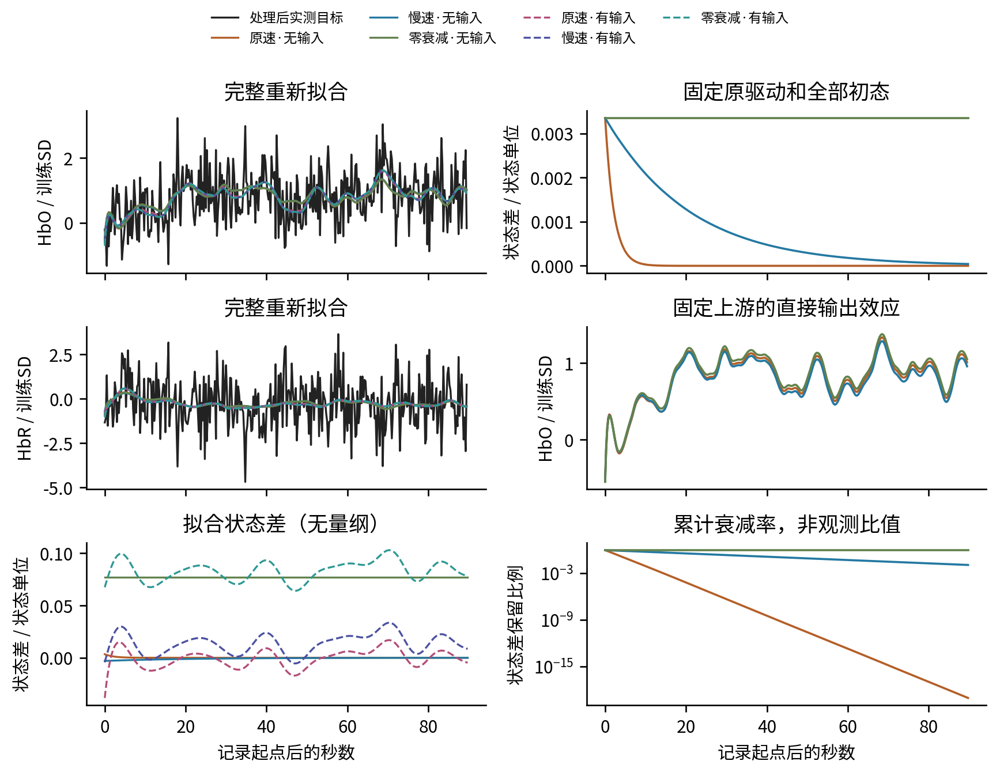
左列：目标与六臂完整预测、相应状态差；右列：固定上游、无输入的三种衰减率重放。实线为无输入，虚线为有输入；右下为对数轴。每行两图的物理量不同，纵轴依单位独立标明；HbR重放重合故不重复画。
证据：measured/refed__14__prefrontal__r0_90_joint_full.json/.npz
| 本记录双Hb NRMSE | 原速·无输入 | 慢速·无输入 | 零衰减·无输入 | 原速·有输入 | 慢速·有输入 | 零衰减·有输入 |
|---|---|---|---|---|---|---|
| 数值 | 1.059 | 1.059 | 1.059 | 1.051 | 1.052 | 1.051 |
样例按本数据集90秒原速联合完整误差升序，取上中位数，并列按key排序；候选方法共享此规则，失败不从候选分母中消失。本页仅用于解释，不用于选模。身份：{'id': 'refed__14__prefrontal__r0', 'dataset': 'refed', 'subject': '14', 'task': 'emotion_video', 'anchor': {'region': 'prefrontal', 'hb_pair': 48, 'hb_channel': 'CH49', 'eeg_indices': [0, 3, 1, 7, 8, 6], 'eeg_channels': ['FP1', 'AF3', 'FPZ', 'F3', 'F1', 'F5'], 'hb_geometry': {'schema': 'canonical_channel_geometry_v1', 'channel_name': 'CH49_HbO', 'base_channel_name': 'CH49', 'component': 'HbO', 'modality': 'fnirs', 'x': -0.25630142927165217, 'y': 0.8130932310063512, 'z': 0.0, 'coordinate_system': 'refed_paper_layout_2d_v1', 'coordinate_units': 'normalized_figure_radius', 'source_index': 5, 'detector_index': 6, 'position_available': True, 'coordinate_status': 'paper_figure_optode_midpoint_2d', 'measured_subject_coordinate': False, 'intended_use': 'coarse_eeg_fnirs_neighborhood_only', 'source_file': 'src/data/assets/refed_paper_layout_v1.json', 'metadata': {'geometry_version': 'refed_paper_layout_v1', 'source': {'url': 'https://proceedings.neurips.cc/paper_files/paper/2025/file/2bf0ed7c35d9d84128e7f7c72ab76402-Paper-Datasets_and_Benchmarks_Track.pdf', 'pdf_sha256': 'f656f10271c953bb00db1036a310fc4c82eb0afebdbeaa61d18fec21e1e32ce8', 'page_1based': 5, 'figure': '2', 'extraction': 'PyMuPDF vector drawing circle bounding-box midpoints and nearest PDF text labels. All spatial positions use the left combined EEG/fNIRS panel. Channel/source/detector incidence was independently recovered from right-inset yellow segment endpoints and black numbered labels before CSV comparison.'}, 'source_files': {'layout': 'src/data/assets/refed_paper_layout_v1.json', 'eeg_channels': 'data/REFED-dataset/EEG_channels.csv', 'native_fnirs_coordinates': 'data/REFED-dataset/fNIRS_coordinates.csv'}, 'normalization': {'center_page_pt': [248.02381896972656, 151.20818328857422], 'radius_page_pt': 68.89944839477539, 'x_positive': 'figure_right', 'y_positive': 'figure_anterior', 'head_drawing_index': 110}, 'spatial_dimension': 2, 'z_meaning': 'planar_embedding_not_measured_depth', 'measured_subject_coordinate': False, 'intended_use': 'coarse_eeg_fnirs_neighborhood_only', 'prohibited_interpretation': 'individual_3d_registration_mm_distance_cortical_location_or_optical_sensitivity', 'reference_electrode': {'channel_name': 'AFZ', 'center_page_pt': [248.1295623779297, 108.26562881469727], 'drawing_index': 163}, 'center_page_pt': [230.3647918701172, 95.18650817871094], 'coordinate_status': 'paper_figure_optode_midpoint_2d', 'source_marker': {'index': 5, 'center_page_pt': [231.6324462890625, 101.78358459472656], 'drawing_index': 245}, 'detector_marker': {'index': 6, 'center_page_pt': [229.09713745117188, 88.58943176269531], 'drawing_index': 244}, 'native_geometry': {'coordinate_system': 'dataset_head_coordinates', 'coordinate_units': 'unknown_native', 'x': 29.0, 'y': -106.5, 'z': 32.9}}}, 'eeg_geometry': [{'schema': 'canonical_channel_geometry_v1', 'channel_name': 'FP1', 'base_channel_name': 'FP1', 'component': 'eeg', 'modality': 'eeg', 'x': -0.25434279631285794, 'y': 0.8114235539897762, 'z': 0.0, 'coordinate_system': 'refed_paper_layout_2d_v1', 'coordinate_units': 'normalized_figure_radius', 'source_index': None, 'detector_index': None, 'position_available': True, 'coordinate_status': 'paper_figure_digitized_2d', 'measured_subject_coordinate': False, 'intended_use': 'coarse_eeg_fnirs_neighborhood_only', 'source_file': 'src/data/assets/refed_paper_layout_v1.json', 'metadata': {'geometry_version': 'refed_paper_layout_v1', 'source': {'url': 'https://proceedings.neurips.cc/paper_files/paper/2025/file/2bf0ed7c35d9d84128e7f7c72ab76402-Paper-Datasets_and_Benchmarks_Track.pdf', 'pdf_sha256': 'f656f10271c953bb00db1036a310fc4c82eb0afebdbeaa61d18fec21e1e32ce8', 'page_1based': 5, 'figure': '2', 'extraction': 'PyMuPDF vector drawing circle bounding-box midpoints and nearest PDF text labels. All spatial positions use the left combined EEG/fNIRS panel. Channel/source/detector incidence was independently recovered from right-inset yellow segment endpoints and black numbered labels before CSV comparison.'}, 'source_files': {'layout': 'src/data/assets/refed_paper_layout_v1.json', 'eeg_channels': 'data/REFED-dataset/EEG_channels.csv', 'native_fnirs_coordinates': 'data/REFED-dataset/fNIRS_coordinates.csv'}, 'normalization': {'center_page_pt': [248.02381896972656, 151.20818328857422], 'radius_page_pt': 68.89944839477539, 'x_positive': 'figure_right', 'y_positive': 'figure_anterior', 'head_drawing_index': 110}, 'spatial_dimension': 2, 'z_meaning': 'planar_embedding_not_measured_depth', 'measured_subject_coordinate': False, 'intended_use': 'coarse_eeg_fnirs_neighborhood_only', 'prohibited_interpretation': 'individual_3d_registration_mm_distance_cortical_location_or_optical_sensitivity', 'reference_electrode': {'channel_name': 'AFZ', 'center_page_pt': [248.1295623779297, 108.26562881469727], 'drawing_index': 163}, 'center_page_pt': [230.49974060058594, 95.30154800415039], 'coordinate_status': 'paper_figure_digitized_2d', 'figure_marker': {'channel_name': 'FP1', 'center_page_pt': [230.49974060058594, 95.30154800415039], 'drawing_index': 206}}}, {'schema': 'canonical_channel_geometry_v1', 'channel_name': 'AF3', 'base_channel_name': 'AF3', 'component': 'eeg', 'modality': 'eeg', 'x': -0.2332148516156701, 'y': 0.6184798259864019, 'z': 0.0, 'coordinate_system': 'refed_paper_layout_2d_v1', 'coordinate_units': 'normalized_figure_radius', 'source_index': None, 'detector_index': None, 'position_available': True, 'coordinate_status': 'paper_figure_digitized_2d', 'measured_subject_coordinate': False, 'intended_use': 'coarse_eeg_fnirs_neighborhood_only', 'source_file': 'src/data/assets/refed_paper_layout_v1.json', 'metadata': {'geometry_version': 'refed_paper_layout_v1', 'source': {'url': 'https://proceedings.neurips.cc/paper_files/paper/2025/file/2bf0ed7c35d9d84128e7f7c72ab76402-Paper-Datasets_and_Benchmarks_Track.pdf', 'pdf_sha256': 'f656f10271c953bb00db1036a310fc4c82eb0afebdbeaa61d18fec21e1e32ce8', 'page_1based': 5, 'figure': '2', 'extraction': 'PyMuPDF vector drawing circle bounding-box midpoints and nearest PDF text labels. All spatial positions use the left combined EEG/fNIRS panel. Channel/source/detector incidence was independently recovered from right-inset yellow segment endpoints and black numbered labels before CSV comparison.'}, 'source_files': {'layout': 'src/data/assets/refed_paper_layout_v1.json', 'eeg_channels': 'data/REFED-dataset/EEG_channels.csv', 'native_fnirs_coordinates': 'data/REFED-dataset/fNIRS_coordinates.csv'}, 'normalization': {'center_page_pt': [248.02381896972656, 151.20818328857422], 'radius_page_pt': 68.89944839477539, 'x_positive': 'figure_right', 'y_positive': 'figure_anterior', 'head_drawing_index': 110}, 'spatial_dimension': 2, 'z_meaning': 'planar_embedding_not_measured_depth', 'measured_subject_coordinate': False, 'intended_use': 'coarse_eeg_fnirs_neighborhood_only', 'prohibited_interpretation': 'individual_3d_registration_mm_distance_cortical_location_or_optical_sensitivity', 'reference_electrode': {'channel_name': 'AFZ', 'center_page_pt': [248.1295623779297, 108.26562881469727], 'drawing_index': 163}, 'center_page_pt': [231.9554443359375, 108.59526443481445], 'coordinate_status': 'paper_figure_digitized_2d', 'figure_marker': {'channel_name': 'AF3', 'center_page_pt': [231.9554443359375, 108.59526443481445], 'drawing_index': 242}}}, {'schema': 'canonical_channel_geometry_v1', 'channel_name': 'FPZ', 'base_channel_name': 'FPZ', 'component': 'eeg', 'modality': 'eeg', 'x': 0.001534749706517875, 'y': 0.8473214714307615, 'z': 0.0, 'coordinate_system': 'refed_paper_layout_2d_v1', 'coordinate_units': 'normalized_figure_radius', 'source_index': None, 'detector_index': None, 'position_available': True, 'coordinate_status': 'paper_figure_digitized_2d', 'measured_subject_coordinate': False, 'intended_use': 'coarse_eeg_fnirs_neighborhood_only', 'source_file': 'src/data/assets/refed_paper_layout_v1.json', 'metadata': {'geometry_version': 'refed_paper_layout_v1', 'source': {'url': 'https://proceedings.neurips.cc/paper_files/paper/2025/file/2bf0ed7c35d9d84128e7f7c72ab76402-Paper-Datasets_and_Benchmarks_Track.pdf', 'pdf_sha256': 'f656f10271c953bb00db1036a310fc4c82eb0afebdbeaa61d18fec21e1e32ce8', 'page_1based': 5, 'figure': '2', 'extraction': 'PyMuPDF vector drawing circle bounding-box midpoints and nearest PDF text labels. All spatial positions use the left combined EEG/fNIRS panel. Channel/source/detector incidence was independently recovered from right-inset yellow segment endpoints and black numbered labels before CSV comparison.'}, 'source_files': {'layout': 'src/data/assets/refed_paper_layout_v1.json', 'eeg_channels': 'data/REFED-dataset/EEG_channels.csv', 'native_fnirs_coordinates': 'data/REFED-dataset/fNIRS_coordinates.csv'}, 'normalization': {'center_page_pt': [248.02381896972656, 151.20818328857422], 'radius_page_pt': 68.89944839477539, 'x_positive': 'figure_right', 'y_positive': 'figure_anterior', 'head_drawing_index': 110}, 'spatial_dimension': 2, 'z_meaning': 'planar_embedding_not_measured_depth', 'measured_subject_coordinate': False, 'intended_use': 'coarse_eeg_fnirs_neighborhood_only', 'prohibited_interpretation': 'individual_3d_registration_mm_distance_cortical_location_or_optical_sensitivity', 'reference_electrode': {'channel_name': 'AFZ', 'center_page_pt': [248.1295623779297, 108.26562881469727], 'drawing_index': 163}, 'center_page_pt': [248.1295623779297, 92.82820129394531], 'coordinate_status': 'paper_figure_digitized_2d', 'figure_marker': {'channel_name': 'FPZ', 'center_page_pt': [248.1295623779297, 92.82820129394531], 'drawing_index': 182}}}, {'schema': 'canonical_channel_geometry_v1', 'channel_name': 'F3', 'base_channel_name': 'F3', 'component': 'eeg', 'modality': 'eeg', 'x': -0.34636742959930905, 'y': 0.4471135604604183, 'z': 0.0, 'coordinate_system': 'refed_paper_layout_2d_v1', 'coordinate_units': 'normalized_figure_radius', 'source_index': None, 'detector_index': None, 'position_available': True, 'coordinate_status': 'paper_figure_digitized_2d', 'measured_subject_coordinate': False, 'intended_use': 'coarse_eeg_fnirs_neighborhood_only', 'source_file': 'src/data/assets/refed_paper_layout_v1.json', 'metadata': {'geometry_version': 'refed_paper_layout_v1', 'source': {'url': 'https://proceedings.neurips.cc/paper_files/paper/2025/file/2bf0ed7c35d9d84128e7f7c72ab76402-Paper-Datasets_and_Benchmarks_Track.pdf', 'pdf_sha256': 'f656f10271c953bb00db1036a310fc4c82eb0afebdbeaa61d18fec21e1e32ce8', 'page_1based': 5, 'figure': '2', 'extraction': 'PyMuPDF vector drawing circle bounding-box midpoints and nearest PDF text labels. All spatial positions use the left combined EEG/fNIRS panel. Channel/source/detector incidence was independently recovered from right-inset yellow segment endpoints and black numbered labels before CSV comparison.'}, 'source_files': {'layout': 'src/data/assets/refed_paper_layout_v1.json', 'eeg_channels': 'data/REFED-dataset/EEG_channels.csv', 'native_fnirs_coordinates': 'data/REFED-dataset/fNIRS_coordinates.csv'}, 'normalization': {'center_page_pt': [248.02381896972656, 151.20818328857422], 'radius_page_pt': 68.89944839477539, 'x_positive': 'figure_right', 'y_positive': 'figure_anterior', 'head_drawing_index': 110}, 'spatial_dimension': 2, 'z_meaning': 'planar_embedding_not_measured_depth', 'measured_subject_coordinate': False, 'intended_use': 'coarse_eeg_fnirs_neighborhood_only', 'prohibited_interpretation': 'individual_3d_registration_mm_distance_cortical_location_or_optical_sensitivity', 'reference_electrode': {'channel_name': 'AFZ', 'center_page_pt': [248.1295623779297, 108.26562881469727], 'drawing_index': 163}, 'center_page_pt': [224.15929412841797, 120.40230560302734], 'coordinate_status': 'paper_figure_digitized_2d', 'figure_marker': {'channel_name': 'F3', 'center_page_pt': [224.15929412841797, 120.40230560302734], 'drawing_index': 209}}}, {'schema': 'canonical_channel_geometry_v1', 'channel_name': 'F1', 'base_channel_name': 'F1', 'component': 'eeg', 'modality': 'eeg', 'x': -0.17930372303592315, 'y': 0.43227914151682323, 'z': 0.0, 'coordinate_system': 'refed_paper_layout_2d_v1', 'coordinate_units': 'normalized_figure_radius', 'source_index': None, 'detector_index': None, 'position_available': True, 'coordinate_status': 'paper_figure_digitized_2d', 'measured_subject_coordinate': False, 'intended_use': 'coarse_eeg_fnirs_neighborhood_only', 'source_file': 'src/data/assets/refed_paper_layout_v1.json', 'metadata': {'geometry_version': 'refed_paper_layout_v1', 'source': {'url': 'https://proceedings.neurips.cc/paper_files/paper/2025/file/2bf0ed7c35d9d84128e7f7c72ab76402-Paper-Datasets_and_Benchmarks_Track.pdf', 'pdf_sha256': 'f656f10271c953bb00db1036a310fc4c82eb0afebdbeaa61d18fec21e1e32ce8', 'page_1based': 5, 'figure': '2', 'extraction': 'PyMuPDF vector drawing circle bounding-box midpoints and nearest PDF text labels. All spatial positions use the left combined EEG/fNIRS panel. Channel/source/detector incidence was independently recovered from right-inset yellow segment endpoints and black numbered labels before CSV comparison.'}, 'source_files': {'layout': 'src/data/assets/refed_paper_layout_v1.json', 'eeg_channels': 'data/REFED-dataset/EEG_channels.csv', 'native_fnirs_coordinates': 'data/REFED-dataset/fNIRS_coordinates.csv'}, 'normalization': {'center_page_pt': [248.02381896972656, 151.20818328857422], 'radius_page_pt': 68.89944839477539, 'x_positive': 'figure_right', 'y_positive': 'figure_anterior', 'head_drawing_index': 110}, 'spatial_dimension': 2, 'z_meaning': 'planar_embedding_not_measured_depth', 'measured_subject_coordinate': False, 'intended_use': 'coarse_eeg_fnirs_neighborhood_only', 'prohibited_interpretation': 'individual_3d_registration_mm_distance_cortical_location_or_optical_sensitivity', 'reference_electrode': {'channel_name': 'AFZ', 'center_page_pt': [248.1295623779297, 108.26562881469727], 'drawing_index': 163}, 'center_page_pt': [235.66989135742188, 121.42438888549805], 'coordinate_status': 'paper_figure_digitized_2d', 'figure_marker': {'channel_name': 'F1', 'center_page_pt': [235.66989135742188, 121.42438888549805], 'drawing_index': 210}}}, {'schema': 'canonical_channel_geometry_v1', 'channel_name': 'F5', 'base_channel_name': 'F5', 'component': 'eeg', 'modality': 'eeg', 'x': -0.5003627313384651, 'y': 0.47357149378484503, 'z': 0.0, 'coordinate_system': 'refed_paper_layout_2d_v1', 'coordinate_units': 'normalized_figure_radius', 'source_index': None, 'detector_index': None, 'position_available': True, 'coordinate_status': 'paper_figure_digitized_2d', 'measured_subject_coordinate': False, 'intended_use': 'coarse_eeg_fnirs_neighborhood_only', 'source_file': 'src/data/assets/refed_paper_layout_v1.json', 'metadata': {'geometry_version': 'refed_paper_layout_v1', 'source': {'url': 'https://proceedings.neurips.cc/paper_files/paper/2025/file/2bf0ed7c35d9d84128e7f7c72ab76402-Paper-Datasets_and_Benchmarks_Track.pdf', 'pdf_sha256': 'f656f10271c953bb00db1036a310fc4c82eb0afebdbeaa61d18fec21e1e32ce8', 'page_1based': 5, 'figure': '2', 'extraction': 'PyMuPDF vector drawing circle bounding-box midpoints and nearest PDF text labels. All spatial positions use the left combined EEG/fNIRS panel. Channel/source/detector incidence was independently recovered from right-inset yellow segment endpoints and black numbered labels before CSV comparison.'}, 'source_files': {'layout': 'src/data/assets/refed_paper_layout_v1.json', 'eeg_channels': 'data/REFED-dataset/EEG_channels.csv', 'native_fnirs_coordinates': 'data/REFED-dataset/fNIRS_coordinates.csv'}, 'normalization': {'center_page_pt': [248.02381896972656, 151.20818328857422], 'radius_page_pt': 68.89944839477539, 'x_positive': 'figure_right', 'y_positive': 'figure_anterior', 'head_drawing_index': 110}, 'spatial_dimension': 2, 'z_meaning': 'planar_embedding_not_measured_depth', 'measured_subject_coordinate': False, 'intended_use': 'coarse_eeg_fnirs_neighborhood_only', 'prohibited_interpretation': 'individual_3d_registration_mm_distance_cortical_location_or_optical_sensitivity', 'reference_electrode': {'channel_name': 'AFZ', 'center_page_pt': [248.1295623779297, 108.26562881469727], 'drawing_index': 163}, 'center_page_pt': [213.54910278320312, 118.5793685913086], 'coordinate_status': 'paper_figure_digitized_2d', 'figure_marker': {'channel_name': 'F5', 'center_page_pt': [213.54910278320312, 118.5793685913086], 'drawing_index': 211}}}], 'region_reference_eeg': 'FP1', 'neighbor_boundary_gap': 0.048552756349108994, 'seventh_eeg_channel': 'FZ', 'spatial_claim': 'coarse_2d_paper_template_not_individual_3d_or_optical_sensitivity_centroid'}}。
HbO实测峰谷差4.56训练SD、最大值在18.00秒；原速·无输入峰谷差1.82、最大值时刻68.50秒；慢速·无输入峰谷差1.80、最大值时刻68.50秒；原速·有输入峰谷差2.22、最大值时刻68.75秒。 HbR实测峰谷差8.33训练SD、最大值在57.75秒；原速·无输入峰谷差1.25、最大值时刻5.00秒；慢速·无输入峰谷差1.01、最大值时刻5.00秒；原速·有输入峰谷差1.34、最大值时刻5.00秒。
峰谷差在同一冻结训练SD坐标计算；全窗最大值时刻仅为描述，不等同于生理潜伏期。右侧隔离衰减率直接效应；晚段常量输出按参考偏移解释，不能称新增振荡。
将无输入衰减减慢10倍，联合完整比较有8/8个区间跨零；完全取消衰减有7/8个比较明确恶化。保持原速、增加实际状态输入，完整拟合有8/8、隐藏Hb有6/8个比较的收益区间高于零。这组实测证据支持持续状态方向容量不足，比“衰减速度太快是主要祸因”更有依据。
八个数据集×长度条件中，减慢无输入衰减、去掉无输入衰减、原速下增加实际输入的相对NRMSE改善中位数分别为+0.6%、-2.7%、+13.1%。前两项衡量延长初态记忆的实际收益，后一项检验持续输入容量；它们不能互相替代。
无输入的数学结果明确：状态差只携带衰减或常量记忆，不能自主产生持续振荡。实测联合完整比较中，减慢衰减的明确正收益为0/8，原速下增加输入为8/8；其余区间的具体方向与大小见结果表，不能以理论限制替代实际收益证据。
实际输入改变了状态动力学并增加了容量。若它比仅延长初态记忆更能改善晚段或隐藏段误差，支持当前无输入状态差方向对这些条件重建不够灵活；这仍不能识别真实生理来源、证明已恢复独立血容量室，或排除观测映射、噪声和其他模型失配。
所有无输入/输入配对中，联合完整95%区间完全高于零的比较共24/40；隐藏段为17/40。这些是描述性区间计数，相关比较未做多重检验校正，不是显著性发现总数。
| 阶段 | 臂 | 计划 | 合格 | 失败/不合格 |
|---|---|---|---|---|
| synthetic | 原速·无输入 | 144 | 144 | 0 |
| synthetic | 慢速·无输入 | 144 | 144 | 0 |
| synthetic | 零衰减·无输入 | 144 | 144 | 0 |
| synthetic | 原速·有输入 | 144 | 144 | 0 |
| synthetic | 慢速·有输入 | 144 | 144 | 0 |
| synthetic | 零衰减·有输入 | 144 | 144 | 0 |
| measured | 原速·无输入 | 288 | 288 | 0 |
| measured | 慢速·无输入 | 288 | 288 | 0 |
| measured | 零衰减·无输入 | 288 | 287 | 1 |
| measured | 原速·有输入 | 288 | 288 | 0 |
| measured | 慢速·有输入 | 288 | 288 | 0 |
| measured | 零衰减·有输入 | 288 | 288 | 0 |
不合格拟合身份：simultaneous_eeg_nirs__VP005__prefrontal__r0 / 90秒 / Hb_only_full / 零衰减·无输入 / failed_numerical。Hb-only的90秒零衰减相关配对因此使用11/12条记录、仍来自6名被试；其他比较的数量见各格。反事实重放的三次域失败另计，不混入优化未收敛分母。
| 独立复核 | 结果 |
|---|---|
| 保存预测重算双Hb全窗/评分NMSE最大差 | 4.44e-16 |
| 状态→Hb→同一观测算子最大差 | 0.00e+00 |
| 状态差/累计保留率闭合最大差 | 0.00e+00 |
| 固定上游HbR最大差 | 0.00e+00 |
| 4/8积分子步最大差 / 训练SD | 7.99e-05；合同上限 0.005 |
| 合格拟合 / 全计划 | 2591/2592 |
| 交付 | 完整PNG图240 dpi；LaTeX公式PNG300 dpi；正文/表格可搜索 |
下一步应依各数据集的隐藏段、状态差恢复与失败证据选择验证方向：先复核改善是否超出初态参考常量和上游补偿，再考虑独立观测或已测系统生理输入。当前公开开发记录的条件重建不等于未见数据确认，也没有授权或执行新的受保护评价。
WPS实际交互未检查；PDF图像对象、文字提取与逐页实际尺寸预览单独保留。完整资源、监督单元、命令、源码和失败记录继续由本运行拥有。